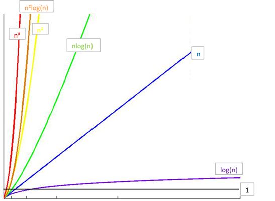
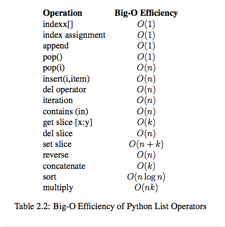

01-引入概念-数据结构与算法（Python）
1.1引入:¶
先来看一道题:
如果 a+b+c=1000，且 a^2+b^2=c^2（a,b,c 为自然数），如何求出所有a、b、c可能的组合?
1.2 第一次尝试¶
1 2 3 4 5 6 7 8 9 10 11 12 13 14 15 16 17 18 19 20 21 22 23 24 25 26 27 28 29 30 31 | # -*- coding: utf-8 -*- """ Spyder Editor This is a temporary script file. """ """ 如果 a+b+c=1000，且 a^2+b^2=c^2（a,b,c 为自然数）， 如何求出所有a、b、c可能的组合? """ """ 使用枚举法 a=0 b=0 c=0~200 进行一一列举求解 """ import time start_time = time.time() #程序开始时间 # 注意是三重循环 for a in range(0, 1001): for b in range(0, 1001): for c in range(0, 1001): if a**2 + b**2 == c**2 and a+b+c == 1000: print("a, b, c: %d, %d, %d" % (a, b, c)) end_time = time.time() #程序结束时间 print("elapsed: %f" % (end_time - start_time)) print("complete!") |
运行结果：
1 2 3 4 5 6 7 | a, b, c: 0, 500, 500 a, b, c: 200, 375, 425 a, b, c: 375, 200, 425 a, b, c: 500, 0, 500 elapsed: 2664.042919 complete! 注意运行的时间:2664.042919秒,也有电脑太烂的原因 |
1.3 算法的提出¶
算法的概念¶
算法是计算机处理信息的本质，因为计算机程序本质上是一个算法来告诉计算机确切的步骤来执行一个指定的任务。一般地，当算法在处理信息时，会从输入设备或数据的存储地址读取数据，把结果写入输出设备或某个存储地址供以后再调用。
算法是独立存在的一种解决问题的方法和思想。
对于算法而言，实现的语言并不重要，重要的是思想。
算法可以有不同的语言描述实现版本（如C描述、C++描述、Python描述等），我们现在是在用Python语言进行描述实现。
算法的五大特性¶
输入: 算法具有0个或多个输入 输出: 算法至少有1个或多个输出 有穷性: 算法在有限的步骤之后会自动结束而不会无限循环，并且每一个步骤可以在可接受的时间内完成 确定性：算法中的每一步都有确定的含义，不会出现二义性 可行性：算法的每一步都是可行的，也就是说每一步都能够执行有限的次数完成
1.4第二次尝试¶
1 2 3 4 5 6 7 8 9 10 11 12 13 14 15 16 17 18 19 20 21 22 23 24 25 26 27 28 29 30 31 | import time start_time = time.time() # 注意是两重循环 # -*- coding: utf-8 -*- """ Spyder Editor This is a temporary script file. """ """ 如果 a+b+c=1000，且 a^2+b^2=c^2（a,b,c 为自然数）， 如何求出所有a、b、c可能的组合? """ import time start_time = time.time() #程序开始时间 #首先固定一个变量a,再固定b, #因为a固定所以b最大取得是1000-a #然后根据a+b+c=1000再得出c #这样做不仅是减少了一重循环同时也减少了第二层循环的次数 for a in range(0, 1001): for b in range(0, 1001-a): c = 1000 - a - b # if a**2 + b**2 == c**2: print("a, b, c: %d, %d, %d" % (a, b, c)) end_time = time.time() #程序结束时间 print("elapsed: %f" % (end_time - start_time)) print("complete!") |
运行结果：
1 2 3 4 5 6 7 | a, b, c: 0, 500, 500 a, b, c: 200, 375, 425 a, b, c: 375, 200, 425 a, b, c: 500, 0, 500 elapsed: 1.077858 complete! 注意运行的时间:1.077858秒,这个差距简直是不要不要的 |
1.5 算法效率衡量¶
执行时间反应算法效率¶
对于同一问题，我们给出了两种解决算法，在两种算法的实现中，我们对程序执行的时间进行了测算，发现两段程序执行的时间相差悬殊（2000多秒秒相比于1.几秒），由此我们可以得出结论：实现算法程序的执行时间可以反应出算法的效率，即算法的优劣。
单靠时间值绝对可信吗？¶
假设我们将第二次尝试的算法程序运行在一台配置古老性能低下的计算机中，情况会如何？很可能运行的时间并不会比在我们的电脑中运行算法一的214.583347秒快多少。
单纯依靠运行的时间来比较算法的优劣并不一定是客观准确的！
程序的运行离不开计算机环境（包括硬件和操作系统），这些客观原因会影响程序运行的速度并反应在程序的执行时间上。那么如何才能客观的评判一个算法的优劣呢？
时间复杂度与“大O记法”¶
我们假定计算机执行算法每一个基本操作的时间是固定的一个时间单位，那么有多少个基本操作就代表会花费多少时间单位。算法对于不同的机器环境而言，确切的单位时间是不同的，但是对于算法进行多少个基本操作（即花费多少时间单位）在规模数量级上却是相同的，由此可以忽略机器环境的影响而客观的反应算法的时间效率。
对于算法的时间效率，我们可以用“大O记法”来表示。
“大O记法”：对于单调的整数函数f，如果存在一个整数函数g和实常数c>0，使得对于充分大的n总有f(n)<=c*g(n)，就说函数g是f的一个渐近函数（忽略常数），记为f(n)=O(g(n))。也就是说，在趋向无穷的极限意义下，函数f的增长速度受到函数g的约束，亦即函数f与函数g的特征相似.
时间复杂度：假设存在函数g，使得算法A处理规模为n的问题示例所用时间为T(n)=O(g(n))，则称O(g(n))为算法A的渐近时间复杂度，简称时间复杂度，记为T(n)
如何理解“大O记法”¶
对于算法进行特别具体的细致分析虽然很好，但在实践中的实际价值有限。对于算法的时间性质和空间性质，最重要的是其数量级和趋势，这些是分析算法效率的主要部分。而计量算法基本操作数量的规模函数中那些常量因子可以忽略不计。例如，可以认为3n^2和100n^2属于同一个量级，如果两个算法处理同样规模实例的代价分别为这两个函数，就认为它们的效率“差不多”，都为n^2级。
最坏时间复杂度¶
分析算法时，存在几种可能的考虑：
- 算法完成工作最少需要多少基本操作，即最优时间复杂度
- 算法完成工作最多需要多少基本操作，即最坏时间复杂度
- 算法完成工作平均需要多少基本操作，即平均时间复杂度
-
对于最优时间复杂度，其价值不大，因为它没有提供什么有用信息，其反映的只是最乐观最理想的情况，没有参考价值。
-
对于最坏时间复杂度，提供了一种保证，表明算法在此种程度的基本操作中一定能完成工作。
-
对于平均时间复杂度，是对算法的一个全面评价，因此它完整全面的反映了这个算法的性质。但另一方面，这种衡量并没有保证，不是每个计算都能在这个基本操作内完成。而且，对于平均情况的计算，也会因为应用算法的实例分布可能并不均匀而难以计算。
因此，我们主要关注算法的最坏情况，亦即最坏时间复杂度。
时间复杂度的几条基本计算规则¶
- 基本操作，即只有常数项，认为其时间复杂度为O(1)
- 顺序结构，时间复杂度按加法进行计算
- 循环结构，时间复杂度按乘法进行计算
- 分支结构，时间复杂度取最大值
- 判断一个算法的效率时，往往只需要关注操作数量的最高次项，其它次要项和常数项可以忽略
- 在没有特殊说明时，我们所分析的算法的时间复杂度都是指最坏时间复杂度
1.6 算法分析¶
第一次尝试的算法核心部分¶
1 2 3 4 5 | for a in range(0, 1001): for b in range(0, 1001): for c in range(0, 1001): if a**2 + b**2 == c**2 and a+b+c == 1000: print("a, b, c: %d, %d, %d" % (a, b, c)) |
时间复杂度：
T(n) = O(n\times n\times n) = O(n^3)
第二次尝试的算法核心部分¶
1 2 3 4 5 | for a in range(0, 1001): for b in range(0, 1001-a): c = 1000 - a - b if a**2 + b**2 == c**2: print("a, b, c: %d, %d, %d" % (a, b, c)) |
时间复杂度：
T(n) = O(n\times n\times (1+1)) = O(n\times n) = O(n^2)
由此可见，我们尝试的第二种算法要比第一种算法的时间复杂度好多的。
1.7 常见时间复杂度¶
| 执行次数函数举例 | 阶 | 非正式术语 |
|---|---|---|
| 12 | O(1) | 常数阶 |
| 2n+3 | O(n) | 线性阶 |
| 3n2+2n+1 | O(n2) | 平方阶 |
| 5log2n+20 | O(logn) | 对数阶 |
| 2n+3nlog2n+19 | O(nlogn) | nlogn阶 |
| 6n3+2n2+3n+4 | O(n3) | 立方阶 |
| 2n | O(2n) | 指数阶 |
注意，经常将log2n（以2为底的对数）简写成logn
常见时间复杂度之间的关系¶

所消耗的时间从小到大
O(1) < O(logn) < O(n) < O(nlogn) < O(n2) < O(n3) < O(2n) < O(n!) < O(nn)
练习： 时间复杂度练习( 参考算法的效率规则判断 ) O(5) O(2n + 1) O(n²+ n + 1) O(3n³+1)
插入一个公众号看到的关于时间复杂度的漫画:¶
看到微信公众号一篇关于时间复杂度的讲解挺好的: 原po：程序员小灰，仅供学习交流，侵删 https://mp.weixin.qq.com/s?__biz=MzIxMjE5MTE1Nw==&mid=2653195121&idx=1&sn=bf456092c1f1a5e728c8d0a571483dcd&chksm=8c99f9abbbee70bd427e1083f8a4064affd3138490e23666756a8e56061054040d6ebfb4bcce&scene=21#wechat_redirect
时间复杂度的意义
究竟什么是时间复杂度呢？让我们来想象一个场景：
某一天，小灰和大黄同时加入了一个公司......
一天过后，小灰和大黄各自交付了代码，两端代码实现的功能都差不多。
大黄的代码运行一次要花**100毫秒**，内存占用**5MB**。
小灰的代码运行一次要花**100秒**，内存占用**500MB**。
于是......
由此可见，衡量代码的好坏包括两个非常重要的指标：
1.运行时间
2.占用空间
基本操作执行次数
关于代码的基本操作执行次数，我们用四个生活中的场景来做一下比喻：
场景1. 给小灰一条长10寸的面包，小灰每3天吃掉1寸，那么吃掉整个面包需要几天？
答案自然是 3 \times 10 = 30天。
如果面包的长度是 N 寸呢？
此时吃掉整个面包，需要 3 \times n = 3n 天。
如果用一个函数来表达这个相对时间，可以记作 T（n） = 3n。
场景2. 给小灰一条长16寸的面包，小灰每5天吃掉面包剩余长度的一半，第一次吃掉8寸，第二次吃掉4寸，第三次吃掉2寸......那么小灰把面包吃得只剩下1寸，需要多少天呢？
这个问题翻译一下，就是数字16不断地除以2，除几次以后的结果等于1？这里要涉及到数学当中的对数，以2位底，16的对数，可以写为log_2^{16}。
因此，把面包吃得只剩下1寸，需要 5 \times log16 = 5 \times 4 = 20 天。
如果面包的长度是 N 寸呢？
需要 5 \times log_2^n = 5log_2^n天，记作 T（n） = 5log_2^n。
场景3. 给小灰一条长10寸的面包和一个鸡腿，小灰每2天吃掉一个鸡腿。那么小灰吃掉整个鸡腿需要多少天呢？
答案自然是2天。因为只说是吃掉鸡腿，和10寸的面包没有关系。
如果面包的长度是 N 寸呢？
无论面包有多长，吃掉鸡腿的时间仍然是2天，记作 T（n） = 2。
场景4. 给小灰一条长10寸的面包，小灰吃掉第一个一寸需要1天时间，吃掉第二个一寸需要2天时间，吃掉第三个一寸需要3天时间.....每多吃一寸，所花的时间也多一天。那么小灰吃掉整个面包需要多少天呢？
答案是从1累加到10的总和，也就是55天。
如果面包的长度是 N 寸呢？
此时吃掉整个面包，需要 1+2+3+......+ (n-1) + n = {(1+n)\times} n/2 = 0.5n^2 + 0.5n。
记作 T（n） = 0.5n^2 + 0.5n。
上面所讲的是吃东西所花费的相对时间，这一思想同样适用于对程序**基本操作执行次数**的统计。刚才的四个场景，分别对应了程序中最常见的四种执行方式： 场景1:$ T（n） = 3n$，执行次数是**线性**的。
场景2: T（n） = 5log_2^n，执行次数是**对数**的。
场景3:T（n） = 2，执行次数是**常量**的。
场景4:T（n） = 0.5n^2 + 0.5n，执行次数是一个**多项式**。
渐进时间复杂度
有了基本操作执行次数的函数 T（n），是否就可以分析和比较一段代码的运行时间了呢？还是有一定的困难。
比如算法A的相对时间是T（n）= 100n，算法B的相对时间是T（n）= 5n^2，这两个到底谁的运行时间更长一些？这就要看n的取值了。
所以，这时候有了**渐进****时间复杂度（asymptotic time complectiy）**的概念，官方的定义如下：
若存在函数$ f（n），使得当n趋近于无穷大时，T（n）/ f（n）T（n）/ f（n）的极限值为不等于零的常数，则称 f（n）是T（n）$ f（n）是T（n）T（n）/ f（n）T（n）/ f（n）的极限值为不等于零的常数，则称 f（n）是T（n）$ f（n）是T（n）的同数量级函数。
记作 **T（n）= O（f（n）），称O（f（n）） 为算法的渐进时间复杂度，简称时间复杂度。**
渐进时间复杂度用大写O来表示，所以也被称为**大O表示法**。
如何推导出时间复杂度呢？有如下几个原则：
-
如果运行时间是常数量级，用常数1表示。
-
只保留时间函数中的最高阶项
-
如果最高阶项存在，则省去最高阶项前面的系数。
让我们回头看看刚才的四个场景。
场景1：
$T（n） = 3n $
最高阶项为3n，省去系数3，转化的时间复杂度为：
T（n） = O（n）
场景2：
T（n） = 5log_2^n
最高阶项为$ 5log_2^n$ ，省去系数5，转化的时间复杂度为：
T（n） = O（log_2^n）
场景3：
T（n） = 2
只有常数量级，转化的时间复杂度为：
T（n） = O（1）
场景4：
T（n） = 0.5n^2 + 0.5n
最高阶项为0.5n^2，省去系数0.5，转化的时间复杂度为：
T（n） = O（n^2）
这四种时间复杂度究竟谁用时更长，谁节省时间呢？稍微思考一下就可以得出结论：
O（1）< O（log_2^n）< O（n）<O（n^2）
在编程的世界中有着各种各样的算法，除了上述的四个场景，还有许多不同形式的时间复杂度，比如：
O（nlog_2^n）, =O（n^3）, O（m*n），O（2^n），O（n！）
今后遨游在代码的海洋里，我们会陆续遇到上述时间复杂度的算法。
时间复杂度的巨大差异:
我们来举过一个栗子：
算法A的相对时间规模是T（n）= 100n，时间复杂度是O(n)
算法B的相对时间规模是T（n）= 5n^2，时间复杂度是O(n^2)，
算法A运行在小灰家里的老旧电脑上，算法B运行在某台超级计算机上，运行速度是老旧电脑的100倍。
那么，随着输入规模 n 的增长，两种算法谁运行更快呢？
从表格中可以看出，当n的值很小的时候，算法A的运行用时要远大于算法B；当n的值达到1000左右，算法A和算法B的运行时间已经接近；当n的值越来越大，达到十万、百万时，算法A的优势开始显现，算法B则越来越慢，差距越来越明显。
这就是不同时间复杂度带来的差距。
1.8 Python内置类型性能分析¶
timeit模块¶
timeit模块可以用来测试一小段Python代码的执行速度。
class timeit.Timer(stmt='pass', setup='pass', timer=) ---计时器¶
Timer是测量小段代码执行速度的类。
stmt参数是要测试的代码语句（statment）；重点
setup参数是运行代码时需要的设置；
timer参数是一个定时器函数，与平台有关。
timeit.Timer.timeit(number=1000000)¶
Timer类中测试语句执行速度的对象方法。number参数是测试代码时的测试次数，默认为1000000次。方法返回执行代码的平均耗时，一个float类型的秒数。
list的操作测试¶
1 2 3 4 5 6 7 8 9 10 11 12 13 14 15 16 17 18 19 20 21 22 23 24 25 26 27 28 29 30 31 32 33 34 35 36 37 38 39 40 41 42 43 44 45 46 47 48 49 50 51 52 53 54 55 56 57 58 59 60 61 62 63 64 65 66 67 | # -*- coding: utf-8 -*- """ Created on Sat May 4 19:05:56 2019 @author: zangz """ def test1(): l = [] for i in range(1000): l = l + [i] #直接两个列表加 def test2(): l = [] for i in range(1000): l.append(i) #使用append函数 def test3(): l = [i for i in range(1000)] #列表生成器 def test4(): l = list(range(1000)) #直接转换成列表 def test5(): li = [] for i in range(1000): li.extend([i]) #使用extend函数 def test6(): li = [] for i in range(1000): li.insert(0, i) #使用insert函数,插入到索引为0的位置 def test7(): li = [] for i in range(1000): li.insert(i, i) #使用insert函数,插入到尾部的位置 from timeit import Timer #导入Timer模块 #首先第一个参数执行的是代码因此传入的是字符串,不能直接使用函数名 #第二由于在测试的时候不会在这个py文件中进行测试,而是在新的一个环境中,因此需要使用第二个参数进行设置. #所以为了能在别的地方运行起来需要在运行环境中存在test1这个函数, #因此做这样的设置,"from __main__ import test1"从我当前的文件中导入test1这个函数 #使用__main__的原因是当前文件在启动后名字变成__main__(主程序) t1 = Timer("test1()", "from __main__ import test1") print("concat ",t1.timeit(number=1000), "seconds") t2 = Timer("test2()", "from __main__ import test2") print("append ",t2.timeit(number=1000), "seconds") t3 = Timer("test3()", "from __main__ import test3") print("comprehension ",t3.timeit(number=1000), "seconds") t4 = Timer("test4()", "from __main__ import test4") print("list range ",t4.timeit(number=1000), "seconds") t5 = Timer("test5()", "from __main__ import test5") print("extend ",t5.timeit(number=1000), "seconds") t6 = Timer("test6()", "from __main__ import test6") print("insert_tou ",t6.timeit(number=1000), "seconds") t7 = Timer("test7()", "from __main__ import test7") print("insert_wei ",t7.timeit(number=1000), "seconds") |
执行结果
1 2 3 4 5 6 7 | concat 1.3334399000013946 seconds append 0.06997939999928349 seconds comprehension 0.03429189999951632 seconds list range 0.013997500000186847 seconds extend 0.11160670000026585 seconds insert_tou 0.3415322000000742 seconds insert_wei 0.12679650000063702 seconds |
可以明显的看到使用加号使用的时间是最多的,因此尽量少使用加操作,可以使用extend或者append等执行速度快的.同时使用insert函数在向头部还有尾部插入数据的时候也可以发现速度是不一样的,这是因为list列表的存储结构造成的.
pop操作测试
1 2 3 4 5 6 7 8 9 10 11 12 13 | # -*- coding: utf-8 -*- """ Created on Sat May 4 19:05:56 2019 @author: zangz """ from timeit import Timer #导入Timer模块 x = list(range(2000000)) pop_zero = Timer("x.pop(0)","from __main__ import x") #从头部弹出元素 print("pop_zero ",pop_zero.timeit(number=1000), "seconds") x = list(range(2000000)) pop_end = Timer("x.pop()","from __main__ import x") print("pop_end ",pop_end.timeit(number=1000), "seconds") #从尾部弹出元素 |
执行结果
1 2 | pop_zero 2.536353199999212 seconds pop_end 8.35999999253545e-05 seconds |
测试pop操作：从结果可以看出，pop最后一个元素的效率远远高于pop第一个元素
list内置操作的时间复杂度¶

- 索引查找:index x[]
- 按照索引方式进行赋值:index assignment
- 尾部追加:append
- 从尾部弹出元素:pop()
- 从指定位置弹出元素:pop(i) :最坏的情况O(n)
- 在指定位置插入元素:insert(i,item)
- 删除元素:del operator :一个个的删除复杂度为O(n)
- 迭代器 iteration
- 判断某元素是不是在列表中: contains (in)
- 取切片 get slice[x:y] :复杂度是x与y的距离k
- 删除切片 del slice : 删除切片后,需要用后面的补上删除的切片,因此后面一个个的往前补位,最坏的情况是O(n)
- 设置切片 set slice : 将某部分进行替换:首先是删除切片的元素O(n),然后将列表补充上去就是O(K)加起来就是O(n+k)
- 反转: reverse
- 将两个列表进行相加: concatenate k代表的第二个列表中添加到第一个列表的元素的个数
- 排序 sort 跟排序的算法有关
- 乘法运算:multiply ,两个列表元素个数相乘n*k
dict内置操作的时间复杂度¶
1.9 数据结构¶
我们如何用Python中的类型来保存一个班的学生信息？ 如果想要快速的通过学生姓名获取其信息呢？
实际上当我们在思考这个问题的时候，我们已经用到了数据结构。列表和字典都可以存储一个班的学生信息，但是想要在列表中获取一名同学的信息时，就要遍历这个列表，其时间复杂度为O(n)，而使用字典存储时，可将学生姓名作为字典的键，学生信息作为值，进而查询时不需要遍历便可快速获取到学生信息，其时间复杂度为O(1)。
我们为了解决问题，需要将数据保存下来，然后根据数据的存储方式来设计算法实现进行处理，那么数据的存储方式不同就会导致需要不同的算法进行处理。我们希望算法解决问题的效率越快越好，于是我们就需要**考虑数据究竟如何保存的问题，这就是数据结构。**
在上面的问题中我们可以选择Python中的列表或字典来存储学生信息。列表和字典就是Python内建帮我们封装好的两种数据结构。
概念
数据是一个抽象的概念，将其进行分类后得到程序设计语言中的基本类型。如：int，float，char等。数据元素之间不是独立的，存在特定的关系，这些关系便是结构。数据结构指数据对象中数据元素之间的关系。
Python给我们提供了很多现成的数据结构类型，这些系统自己定义好的，不需要我们自己去定义的数据结构叫做Python的内置数据结构，比如列表、元组、字典。而有些数据组织方式，Python系统里面没有直接定义，需要我们自己去定义实现这些数据的组织方式，这些数据组织方式称之为Python的扩展数据结构，比如栈，队列等。
算法与数据结构的区别 数据结构只是静态的描述了数据元素之间的关系。
高效的程序需要在数据结构的基础上设计和选择算法。
程序 = 数据结构 + 算法
总结：算法是为了解决实际问题而设计的，数据结构是算法需要处理的问题载体¶
抽象数据类型(Abstract Data Type) 抽象数据类型(ADT)的含义是指一个数学模型以及定义在此数学模型上的一组操作。即把数据类型和数据类型上的运算捆在一起，进行封装。引入抽象数据类型的目的是把数据类型的表示和数据类型上运算的实现与这些数据类型和运算在程序中的引用隔开，使它们相互独立。
最常用的数据运算有五种：
- 插入
- 删除
- 修改
- 查找
- 排序